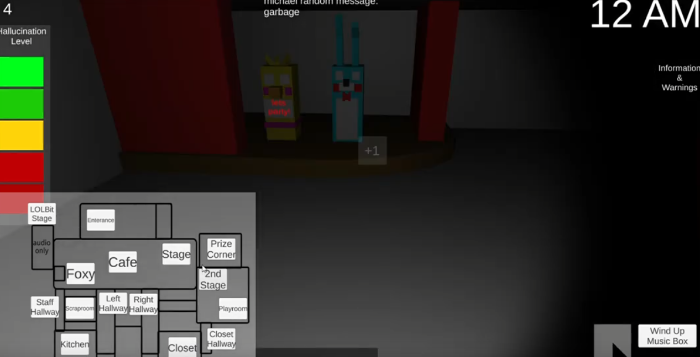
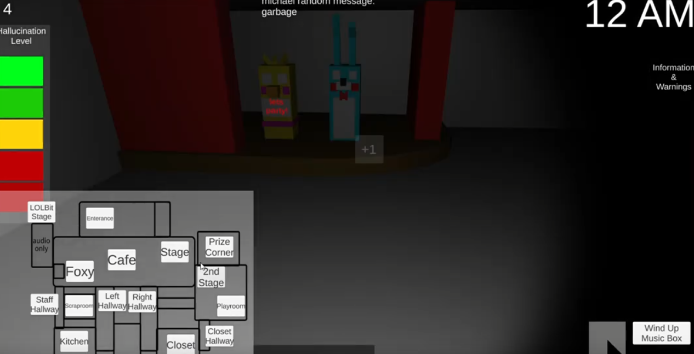

FNAF Ultimate Custom Night with differnet animatronics, mechanics, and map!
Gameplay Play GameResources
DiscordInformation
UCN but if the graphics quality was turned down by tenfold.
After choosing your settings, you need to survive the night (12am-6am) by fending off the animatronics.
Check cameras, maintain your sanity, wind the music box, don't make too much noise, find the guitar, get faz coins, don't get too hot,
put on the mask,
check lights, block doors, AND check your time to survive.
As you increase the AI level in the config menu, the more likely the animatronic will activate their event. Reach 6AM to win!
Michael's Description
this is my 3rd 3D project I've made in unity. 1st was a bad FPS i followed a tutorial for, and the 2nd was a baldi basics clone that didn't work.
drawings for the first 4 animatronics as you can see are really bad, and the rest i traced.
originally, this was FNAF 1 with all 6 nights, but i eventually made more animatronics, which evolved into this
Visuals

 
